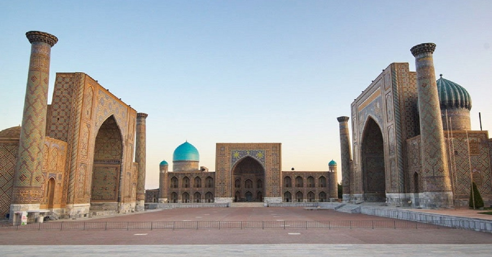

Samarqand viloyati
Samarqand viloyati – Oʻzbekiston Respublikasidagi maʼmuriy birlik. Maʼmuriy markazi – Samarqand shahri. Mamlakatning muhim iqtisodiy madaniy va eng goʻzal mintaqasi.

Samarqand viloyati – Oʻzbekiston Respublikasidagi maʼmuriy birlik. Maʼmuriy markazi – Samarqand shahri. Mamlakatning muhim iqtisodiy madaniy va eng goʻzal mintaqasi.
